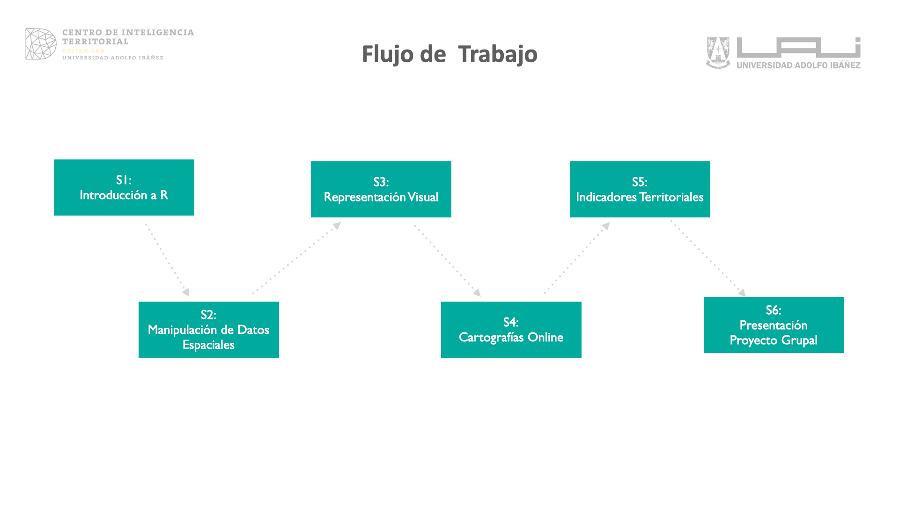
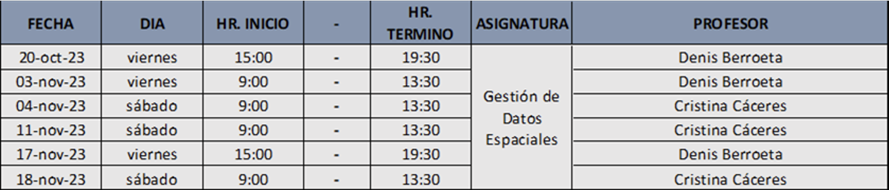

Gestión de Datos Espaciales
Diplomado en Gestión y Evidencia Territorial - UAI

1 Prefacio
1.1 Introducción
Hoy en día es cada vez más común contar con información georreferenciada, la cual se utiliza en el día a día para analizar fenómenos territoriales y para apoyar decisiones dentro de diversas instituciones de los sectores tanto privado, público y académico. Esta información geográfica puede tomar diversas formas en el espacio, y el uso de técnicas de modelamiento territorial permite analizarla de una manera cuantitativa, robusta y escalable.
En modelamiento territorial permite revelar patrones geoespaciales en los datos que podrían pasar desapercibidos al analizarse con herramientas estadísticas convencionales que no incorporen explícitamente la dimensión espacial. Este campo está en constante desarrollo y se puede considerar como una intersección entre la geoestadística, geomática, inteligencia artificial y sistemas de información geográfica (SIG). Este enfoque interdisciplinario es necesario para comprender procesos territoriales complejos e interdependientes. Para construir estos modelos se deben equilibrar cuidadosamente los conocimientos del dominio del problema con las diferentes herramientas y técnicas de análisis de datos que se han desarrollado específicamente para representar el espacio geográfico.
En este curso proponemos un enfoque científico del análisis territorial. Las herramientas que veremos en este curso les permitirán recolectar, transformar, explorar, modelar y visualizar datos geoespaciales de manera algorítmica. Aprenderemos a identificar los diferentes enfoques que se utilizan en modelamiento territorial, aprenderemos a plantear un problema territorial desde una perspectiva conceptual, y diseñaremos metodologías que nos permitan analizar estos problemas utilizando las técnicas de modelamiento apropiadas. Se revisarán también herramientas para elaborar cartografías que permitan una interpretación territorial de los datos analizados. Todas las sesiones de este curso irán acompañadas de un módulo de análisis practico implementado en el lenguaje de programación R que nos permitirá aprender a procesar datos geoespaciales de manera escalable.
1.2 Objetivos
Al terminar el curso el alumno estará capacitado para:
- Recolectar y explorar base de datos provenientes de diferentes fuentes.
- Construir indicadores a partir de información territorial.
- Analizar y explorar datos vectoriales.
- Construir visualizaciones cartográficas online que representen los hallazgos obtenidos.
1.3 Contenidos

- Introducción a R y Lectura de Datos
- Manipulación de Datos Espaciales
- Representación Visual
- Cartografías Online
- Construcción de Indicadores Territoriales
- Presentación Proyecto Grupal.
1.4 Cronograma

Profesor: Denis Berroeta
Coordinador de Investigación, Centro de Inteligencia Territorial - UAI, email: denis.berroeta@uai.cl
Magíster en Inteligencia Artificial, Doctorado y Master en Data Science (cursando), Ingeniero en Prevención de Riesgos y Topógrafo. Tiene experiencia en modelamiento y análisis de datos espaciales, trabajando en diferentes proyectos de investigación públicos y privados en el Centro de Inteligencia Territorial de la Universidad Adolfo Ibáñez, donde se desempeña como coordinador de investigación, diseñando y gestionando la implementación de metodologías de análisis de datos territoriales. Posee experiencia como profesor en Geoestadísticas; Análisis Criminal, Análisis de imágenes satelitales para el monitoreo ambiental y Data Science. Tema de Tesis Detección de Cambios en Imágenes Radar con técnicas de deep learning.
Profesor de cursos y postgrados de la Escuela de Gobierno y de Diseño en UAI, CIAE de Universidad de Chile.
Profesora: Cristina Caceres
Docente UAI, Arquitecto, Urbanista y Territorialista, email: mcristina.caceres@edu.uai.cl
Arquitecto, Urbanista y Territorialista. Socia Fundadora de la oficina Spatial Data Studio. Máster en SIG aplicados a Urbanismo, Territorio y Paisaje de la Universidad Politécnica de Valencia, España. Diplomado Project Management de la Universidad Adolfo Ibáñez, Diplomado SIG de la Universidad de Chile, Estudios en Geo Estadística en la Universidad Adolfo Ibáñez, Curso Análisis Multivariante Aplicado en la Universidad de las Américas, Arquitecto de la Universidad de Talca. Docente de pregrado y postgrado en las Universidades UAI, UDLA, UNAB y UTALCA en asignaturas de Urbanismo, Territorio, Paisaje, SIG y Taller.
Ayudante: Felipe Matas
Analista de investigación y desarrollo, Centro de Inteligencia Territorial - UAI, email: felipe.matas@edu.uai.cl
Ingeniero Industrial con mención en energía. Levantamiento, implementación y desarrollo de nuevas tecnologías y metodologías, soporte a proyectos.
Experiencia en programación, desarrollo de soluciones con TI, toma de muestras y análisis de de datos, probabilidades y Kernel Density. Ayudante en Curso de Ciencia de datos espaciales y Diplomado de Diseño territorial basado en evidencia.
1.5 Metodología
El desarrollo del curso se llevará a cabo mediante las siguientes actividades: - Clases expositivas: realizadas por el/la profesor/a donde se revisarán los aspectos conceptuales, teóricos y prácticos de las técnicas de análisis. - Clases prácticas: realizadas por el/la profesor/a donde se revisarán los aspectos de implementación y ejecución del análisis de datos mediante código en R y aspectos de representación y visualización mediante aplicaciones web de ArcGis. - Trabajos en clases: ejercicios prácticos. - Proyecto de curso: realización de un proyecto práctico que resuelva algún problema de ciencia de datos geoespaciales utilizando las herramientas cubiertas en el curso.
1.6 Evaluación
El curso se evaluará a través de un proyecto grupal que se desarrollará durante todo el curso y se expondrá en la última clase. Este proyecto es el 100% de la nota del curso.
En caso que el alumno no pueda asistir a la fecha de la presentación final, deberá justificar con certificado médico o laboral. Si es aceptada su justificación, podrá acceder a una segunda y última instancia de evaluación optando a la nota máxima de aprobación. De lo contrario tendrá nota 1.
1.7 Normas
- Presencia Activa:
-
Este curso, por su metodología experiencial, requiere de una participación activa de los participantes. Es importante descubrir las fuentes de distracción y evitarlas. Las más usuales son lectura o escritura de e-mails, navegar por internet o utilizar redes sociales. Esto distrae a quien lo hace y restringe al resto del curso de su participación activa.
- Puntualidad y Asistencia:
-
Será necesario ingresar a clases en forma puntual y permanecer en la misma sin salir, a menos que haya una urgencia. Se requerirá como mínimo un 75% de asistencia. Es importante que quien tuviera problemas para estar a tiempo o para asistir, se ponga en contacto lo antes posible con la coordinadora del curso.
- Responsabilidad en los grupos (si aplica):
-
Todos los miembros del grupo han de contribuir al esfuerzo del equipo. Si surgen problemas con algún miembro del equipo, es responsabilidad de cada grupo tratar de resolverlo.
- Grabación de clases:
-
La clase se grabará para apoyar a aquellos estudiantes que hayan tenido problemas de conectividad durante la sesión. Se disponibilizará por 60 días en la plataforma online del curso, para visualizar sin opción de descarga. Después de 60 días y por políticas de la Universidad para cursos sincrónicos, la clase se borra del servidor.